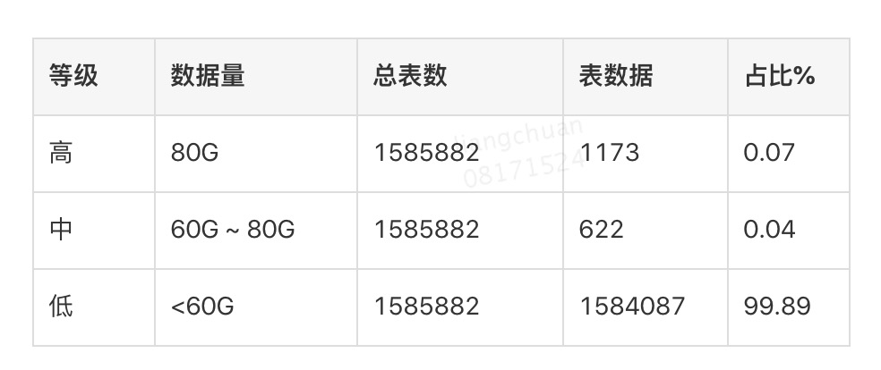
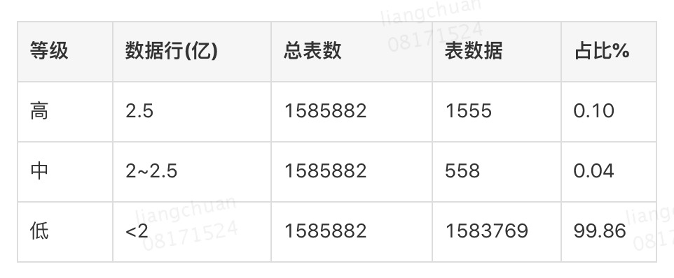

什么是大表
大表是数据量过大的表，会在实际生产环境下给业务带来的问题。
大表的危害
- 读写到瓶颈。物理资源不可能无限扩展，数据库层面软件也有支持极限，当业务发展到一定程度，单集群的表是无法满足高速发展的需求。- 性能下降
- 性能不稳定。当表的量大到了某一个临界值，所以针对表的读写操作都会受到影响，对于正在线上提供读写服务的业务来说，可能是致命的威胁，严重情况下直接导致业务不可用。 - 稳定性下降
- 改表耗时过程。为了实现改表不影响线上读写，采用gh-ost的改表方案，其中有一个步骤，将表完全考一遍，这个过程与表表大小呈现正相关行。很多表已经大到改不动的水平了。 - 无法变更
- 表的统计值不准。数据库内部在做优化的过程中，会使用很多统计形式的量对表进行评估，比如行数。这些指标随着表的增加准确度也越来越难得到保证，会直接影响到对表属性的判断。 - 无法观测
简而言之，大表的所有操作都不稳定，性能不好。
业界对大表的定义
阿里云 https://help.aliyun.com/document_detail/51307.html?spm=a2c4g.11186623.6.732.13436ef6di4dGe
- https://www.jianshu.com/p/7aec260ca1a2
- https://blog.csdn.net/kefengwang/article/details/81213050
- https://blog.csdn.net/liuchangjie0112/article/details/81871269
- https://blog.csdn.net/hemin1003/article/details/81177420
- https://blog.csdn.net/qq_33656602/article/details/82766750
- https://cloud.tencent.com/developer/article/1404798
定义大表的维度
- 单表尺寸（最主要的指标1）

要注意单表过大后，各种操作语句 select/delete/update 不动，会影响 db 的 migration，既影响归档，也影响分库分表，还影响主从延迟。
gh-ost改表工具，一个晚上大概可以完成80G左右的数据。80G的量级不会对改表操作造成额外的负担。
- 单表行数（最主要的指标 2）

数据行指的是表里面的数据总行数。表行数也是体现表大小的一个重要因素，当数据行数超过一定量级了之后，SQL的扫描行数过多，很容易造成慢查询。
上面说的数据量大并不等同于行数多，因为表总量=表行数*行大小(每一行记录的字节数)，存在一种情况，表的总量不大，因为每一行很小，但是行数很多，这种情况也是需要关注的，是对数据量的一个补充。
- 表读写QPS
考虑表读写 qps 的时候，要考虑 binlog+databus 之类的数据搬运工具衍生的写放大问题。做压力测试的时候要注意主从延迟一直保持在可以接受的范围内–实际上做任何大规模的写 dml 以前都要考虑对主从延迟的影响。。如果延迟过高，问题不是改变表大小可以解决的，需要反推业务系统改造。
普通的 MySQL 存储引擎只能提供单表 6000 的读写 tps。
- 慢查询
出现慢查询的时候可能提示出现了大表。
大表的解决方案
归档和拆分。归档针对可以删除数据并且QPS没有成为瓶颈的前提；拆分针对的是业务暴增，不能删除数据，并且QPS已经到了单个集群的瓶颈的情况。
数据归档
需要不同公司不同团队的 dba 提供工具对数据进行归档。
分库分表
分库分表带来的问题
分库分表相比于数据归档，更加偏向于一套完整的解决方案，需要考虑的因素就比较多了。
- 事务支持
在分库分表后，就成为分布式事务了，如何保证数据的一致性成为一个必须面对的问题。一般情况下，使存储数据尽可能达到用户一致，保证系统经过一段较短的时间的自我恢复和修正，数据最终达到一致。
- 分页与排序问题
一般情况下，列表分页时需要按照指定字段进行排序。在单库单表的情况下，分页和排序也是非常容易的。但是，随着分库与分表的演变，也会遇到跨库排序和跨表排序问题。为了最终结果的准确性，需要在不同的分表中将数据进行排序并返回，并将不同分表返回的结果集进行汇总和再次排序，最后再返回给用户。
- 表关联问题
在单库单表的情况下，联合查询是非常容易的。但是，随着分库与分表的演变，联合查询就遇到跨库关联的问题。粗略的解决方法：
- ER分片：子表的记录与所关联的父表记录存放在同一个数据分片上。参考：http://www.mamicode.com/info-detail-1195930.html
- 全局表：基础数据，所有库都拷贝一份。字段冗余：这样有些字段就不用join去查询了。
- ShareJoin：是一个简单的跨分片join，目前支持2个表的join,原理就是解析SQL语句，拆分成单表的SQL语句执行，然后把各个节点的数据汇集。
其中的 sharejoin 是特别中间件的 advanced 特性。
- 分布式全局唯一ID
在单库单表的情况下，直接使用数据库自增特性来生成主键ID，这样确实比较简单。在分库分表的环境中，数据分布在不同的分表上，不能再借助数据库自增长特性，需要使用全局唯一ID。
分库分表的原则
能不切分尽量不要切分。 切分本身只是手段，切分的目的是为了降低维护成本，提高访问效率等。
如果要切分一定要选择合适的切分规则，提前规划好。
数据切分尽量通过数据冗余或表分组（Table Group）来降低跨库Join的可能。
由于于数据库中间件对数据Join实现的优劣难以把握，而且实现高性能难度极大，业务读取尽量少使用多表Join。
我们切分可以水平切换，还可以垂直切换，这两种配合，我们的原则是先垂直分，后水平分。
水平切分是按照某个字段的某种规则来分散到多个库之中，每个表中包含一部分数据。简单来说，我们可以将数据的水平切分理解为是按照数据行的切分，就是将表中的某些行切分到一个数据库，而另外的某些行又切分到其他的数据库中。
水平切分的优点：
- 拆分规则抽象好，join操作基本可以数据库做。
- 不存在单库大数据，高并发的性能瓶颈。
- 应用端改造较少。
- 提高了系统的稳定性跟负载能力。
水平切分的缺点：
- 拆分规则难以抽象。
- 分片事务一致性难以解决。
- 数据多次扩展难度跟维护量极大。
- 跨库join性能较差。
达标拆分的方案
搜集信息里，多数是根据表的行数多少来定是否需要拆分，而不是表尺寸。
主要原因：通常水平切分力求切分均匀。通常使用取模的方式，通过单表行数，是比较容易计算适合分几张表。
搜集的信息里，大多推荐单表行数在500万条到1500万条之间。
超过2000万行，需要拆分。
超过1000万行，年增长量500万行，需要拆分。
超过500万行，年增长量500万行，推荐拆分。